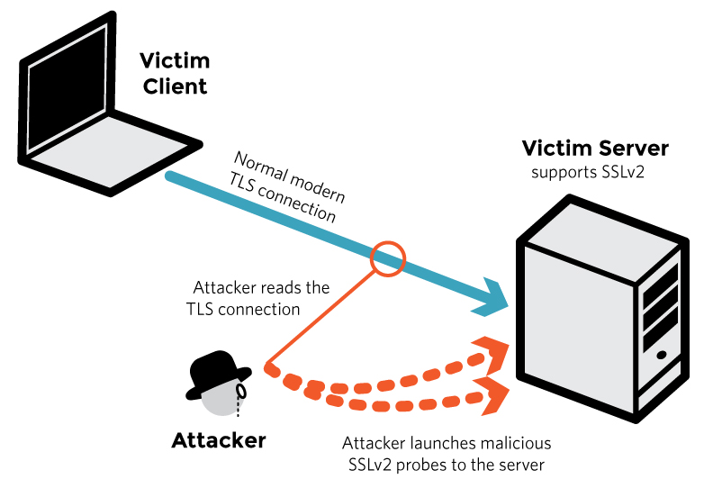

DROWN is a serious vulnerability that affects HTTPS and other services that rely on SSL and TLS, some of the essential cryptographic protocols for Internet security. These protocols allow everyone on the Internet to browse the web, use email, shop online, and send instant messages without third-parties being able to read the communication.
DROWN allows attackers to break the encryption and read or steal sensitive communications, including passwords, credit card numbers, trade secrets, or financial data. Our measurements indicate 33% of all HTTPS servers are vulnerable to the attack.
Any communication between users and the server. This typically includes, but is not limited to, usernames and passwords, credit card numbers, emails, instant messages, and sensitive documents. Under some common scenarios, an attacker can also impersonate a secure website and intercept or change the content the user sees.
Websites, mail servers, and other TLS-dependent services are at risk for the DROWN attack, and many popular sites are affected. We used Internet-wide scanning to measure how many sites are vulnerable:
| Vulnerable at Disclosure (March 1) |
Still vulnerable (March 26) |
|
| HTTPS — Top one million domains | 25% | 15% |
| HTTPS — All browser-trusted sites | 22% | 16% |
| HTTPS — All sites | 33% | 28% |
Operators of vulnerable servers need to take action. There is nothing practical that browsers or end-users can do on their own to protect against this attack.
Modern servers and clients use the TLS encryption protocol. However, due to misconfigurations, many servers also still support SSLv2, a 1990s-era predecessor to TLS. This support did not matter in practice, since no up-to-date clients actually use SSLv2. Therefore, even though SSLv2 is known to be badly insecure, until now, merely supporting SSLv2 was not considered a security problem, because clients never used it.
DROWN shows that merely supporting SSLv2 is a threat to modern servers and clients. It allows an attacker to decrypt modern TLS connections between up-to-date clients and servers by sending probes to a server that supports SSLv2 and uses the same private key.
A server is vulnerable to DROWN if:
To protect against DROWN, server operators need to ensure that their private keys are not used anywhere with server software that allows SSLv2 connections. This includes web servers, SMTP servers, IMAP and POP servers, and any other software that supports SSL/TLS. You can use the form above to check whether your server appears to be exposed to the attack.
Disabling SSLv2 can be complicated and depends on the specific server software. We provide instructions here for several common products:
OpenSSL: OpenSSL is a cryptographic library used in many server products. For users of OpenSSL, the easiest and recommended solution is to upgrade to a recent OpenSSL version. OpenSSL 1.0.2 users should upgrade to 1.0.2g. OpenSSL 1.0.1 users should upgrade to 1.0.1s. Users of older OpenSSL versions should upgrade to either one of these versions. More details can be found in this OpenSSL blog post.
(Updated March 13th, 16:00 UTC) Microsoft IIS (Windows Server): Support for SSLv2 on the server side is enabled by default only on the OS versions that correspond to IIS 7.0 and IIS 7.5, namely Windows Vista, Windows Server 2008, Windows 7 and Windows Server 2008R2. This support can be disabled in the appropriate SSLv2 subkey for 'Server', as outlined in KB245030. Even if users have not taken the steps to disable SSLv2, the export-grade and 56-bit ciphers that make DROWN feasible are not supported by default.
Network Security Services (NSS): NSS is a common cryptographic library built into many server products. NSS versions 3.13 (released back in 2012) and above should have SSLv2 disabled by default. (A small number of users may have enabled SSLv2 manually and will need to take steps to disable it.) Users of older versions should upgrade to a more recent version. We still recommend checking whether your private key is exposed elsewhere, using the form above.
Other affected software and operating systems:
Instructions and information for:
Apache,
Postfix,
Nginx,
Debian,
Red Hat
Browsers and other clients: There is nothing practical that web browsers or other client software can do to prevent DROWN. Only server operators are able to take action to protect against the attack.
DROWN: Breaking TLS
using SSLv2 [PDF]
Nimrod Aviram, Sebastian Schinzel,
Juraj Somorovsky, Nadia Heninger, Maik Dankel,
Jens Steube, Luke Valenta, David Adrian,
J. Alex Halderman, Viktor Dukhovni,
Emilia Käsper, Shaanan Cohney,
Susanne Engels, Christof Paar, and
Yuval Shavitt
25th USENIX Security Symposium, Austin, TX, August 2016
More: Conference paper | Bibtex | Original tech report
The team can be contacted at mail@drownattack.com.
DROWN stands for Decrypting RSA with Obsolete and Weakened eNcryption.
For the complete details, see our full technical paper. We also provide a brief technical summary below:
In technical terms, DROWN is a new form of cross-protocol Bleichenbacher padding oracle attack. It allows an attacker to decrypt intercepted TLS connections by making specially crafted connections to an SSLv2 server that uses the same private key.
The attacker begins by observing roughly several hundred connections between the victim client and server. The attacker will eventually be able to decrypt one of them. Collecting this many connections might involve intercepting traffic for a long time or tricking the user into visiting a website that quickly makes many connections to another site in the background. The connections can use any version of the SSL/TLS protocol, including TLS 1.2, so long as they employ the commonly used RSA key exchange method. In an RSA key exchange, the client picks a random session key and sends it to the server, encrypted using RSA and the server’s public key.
Next, the attacker repeatedly connects to the SSLv2 server and sends specially crafted handshake messages with modifications to the RSA ciphertext from the victim’s connections. (This is possible because unpadded RSA is malleable.) The way the server responds to each of these probes depends on whether the modified ciphertext decrypts to a plaintext message with the right form. Since the attacker doesn’t know the server’s private key, he doesn’t know exactly what the plaintext will be, but the way that the server responds ends up leaking information to the attacker about the secret keys used for the victim’s TLS connections.
The way this information is leaked can take two forms:
In the most general variant of DROWN, the attack exploits a fundamental weakness in the SSLv2 protocol that relates to export-grade cryptography that was introduced to comply with 1990s-era U.S. government restrictions. The attacker’s probes use a cipher that involves only 40 bits of RSA encrypted secret key material. The attacker can tell whether his modified ciphertext was validly formed by comparing the server’s response to all 240 possibilities—a moderately large computation, but one that we show can be inexpensively performed with GPUs. Overall, roughly 40,000 probe connections and 250 computation is needed to decrypt one out of 900 TLS connections from the victim. Running the computations for the full attack on Amazon EC2 costs about $440.
A majority of servers vulnerable to DROWN are also affected by an OpenSSL bug that results in a significantly cheaper version of the attack. In this special case, the attacker can craft his probe messages so that he immediately learns whether they had the right form without any large computation. In this case, the attacker needs about 17,000 probe connections in total to obtain the key for one out of 260 TLS connections from the victim, and the computation takes under a minute on a fast PC.
This special case stems from the complexity introduced by export-grade cryptography. The OpenSSL bug allows the attacker to mix export-grade and non-export-grade crypto parameters in order to exploit unexpected paths in the code.
This form of the attack is fast enough to allow an online man-in-the-middle (MitM) style of attack, where the attacker can impersonate a vulnerable server to the victim client. Among other advantages, such an attacker can force the client and server to use RSA key exchange (and can then decrypt the connection) even if they would normally prefer a different cipher. This lets the attacker target and break connections between modern browsers and servers that prefer perfect-forward-secret key exchange methods, such as DHE and ECDH.
We were able to execute this form of the attack in under a minute on a single PC.
DROWN was developed by researchers at Tel Aviv University, Münster University of Applied Sciences, Ruhr University Bochum, the University of Pennsylvania, the Hashcat project, the University of Michigan, Two Sigma, Google, and the OpenSSL project: Nimrod Aviram, Sebastian Schinzel, Juraj Somorovsky, Nadia Heninger, Maik Dankel, Jens Steube, Luke Valenta, David Adrian, J. Alex Halderman, Viktor Dukhovni, Emilia Käsper, Shaanan Cohney, Susanne Engels, Christof Paar, and Yuval Shavitt
The team can be contacted at mail@drownattack.com.
Yes. The DROWN attack itself was assigned CVE-2016-0800.
DROWN is made worse by two additional OpenSSL implementation vulnerabilities. CVE-2015-3197, which affected OpenSSL versions prior to 1.0.2f and 1.0.1r, allows a DROWN attacker to connect to the server with disabled SSLv2 ciphersuites, provided that support for SSLv2 itself is enabled. CVE-2016-0703, which affected OpenSSL versions prior to 1.0.2a, 1.0.1m, 1.0.0r, and 0.9.8zf, greatly reduces the time and cost of carrying out the DROWN attack.
Yes. We’ve been able to execute the attack against OpenSSL versions that are vulnerable to CVE-2016-0703 in under a minute using a single PC. Even for servers that don’t have these particular bugs, the general variant of the attack, which works against any SSLv2 server, can be conducted in under 8 hours at a total cost of $440.
We have no reason to believe that DROWN has been exploited in the wild prior to this disclosure. Since the details of the vulnerability are now public, attackers may start exploiting it at any time, and we recommend taking the countermeasures explained above as soon as possible.
Indeed, SSLv2 has long known to be weak when clients and servers use it to communicate, and so nearly every modern client uses a more recent protocol. DROWN shows that merely allowing SSLv2, even if no legitimate clients ever use it, is a threat to modern servers and clients. It allows an attacker to decrypt modern TLS connections between up-to-date clients and servers by sending probes to any server that supports SSLv2 using the same private key.
No. DROWN allows an attacker to decrypt one connection at a time. The attacker does not learn the server’s private key.
Yes. Some variants of the attack can be used to perform MitM attacks against TLS or QUIC. More details can be found in sections 5.3 and 7 of the technical paper.
Surprisingly, no. The active MitM form of the attack allows an attacker to target servers and clients that prefer non-RSA key exchange methods. See sections 5.3 and 7 of the technical paper.
Probably not. As the attacker does not learn the server’s private key, there’s no need to obtain new certificates. The only action required is disabling SSLv2 as per the countermeasures explained above. If you cannot confidently determine that SSLv2 is disabled on every device or server that uses your server’s private key, you should generate a fresh key for the server and obtain a new certificate.
No. There is nothing practical that web browsers or other client software can do to prevent DROWN. Only server operators are able to take action to protect against the attack.
Yes, that’s a reasonable precaution, although it will also prevent our scanners from being able to help you identify vulnerable servers. You might consider first running the test suite to identify vulnerable servers and only then filtering SSLv2 traffic. You should also use the countermeasures explained above.
Possibly. If you run a server and can be certain no one made a large number of SSLv2 connections to any of your servers (for example, by examining IDS or server logs), then you weren’t attacked. Your logs may contain a small number of SSLv2 connections from the Internet-wide scans that we conducted over the past few months to measure the prevalence of the vulnerability.
Yes. Even if you’re certain that you have SSLv2 disabled on your HTTPS server, you may be reusing your private key on another server (such as an email server) that does support SSLv2. We recommend manually inspecting all servers that use your private key. In addition, you can check whether your private key is exposed elsewhere on the Internet using the form above.
Security against DROWN is not possible for that embedded device. If you must keep that device running, make sure it uses a different RSA private key than any other servers and devices. You can also limit the scope of attack by using a firewall to filter SSLv2 traffic from outside your organization. In all circumstances, maintaining support for SSLv2 should be a last resort.
Unfortunately, no. Although SSLLabs provides an invaluable suite of security tests, right now it only checks whether your HTTPS server directly allows SSLv2. You’re just as much at risk if your site’s certificate or key is used anywhere else on a server that does support SSLv2. Common examples include SMTP, IMAP, and POP mail servers, and secondary HTTPS servers used for specific web applications. SSLLabs doesn’t yet check for this kind of cross-server exposure to DROWN, but our DROWN check tool attempts to.
You can also download and run our scanner utility. This utility only detects SSLv2 support on a single port. It cannot detect the common scenario, explained above, where a web server that doesn't support SSLv2 is vulnerable because it shares its public key with an email server that does. We strongly recommend using the online scanner above, when at all possible.
Due to CVE-2015-3197, OpenSSL may still accept SSLv2 connections even if all SSLv2 ciphers are disabled.
Not in the immediate future. There are still too many servers vulnerable to the attack.
For the third time in a year, a major Internet security vulnerability has resulted from the way cryptography was weakened by U.S. government policies that restricted exporting strong cryptography until the late 1990s. Although these restrictions, evidently designed to make it easier for NSA to decrypt the communication of people abroad, were relaxed nearly 20 years ago, the weakened cryptography remains in the protocol specifications and continues to be supported by many servers today, adding complexity—and the potential for catastrophic failure—to some of the Internet’s most important security features.
The U.S. government deliberately weakened three kinds of cryptographic primitives: RSA encryption, Diffie-Hellman key exchange, and symmetric ciphers. FREAK exploited export-grade RSA, and Logjam exploited export-grade Diffie-Hellman. Now, DROWN exploits export-grade symmetric ciphers, demonstrating that all three kinds of deliberately weakened crypto have come to put the security of the Internet at risk decades later.
Today, some policy makers are calling for new restrictions on the design of cryptography in order to prevent law enforcement from “going dark.” While we believe that advocates of such backdoors are acting out of a good faith desire to protect their countries, history’s technical lesson is clear: weakening cryptography carries enormous risk to all of our security.